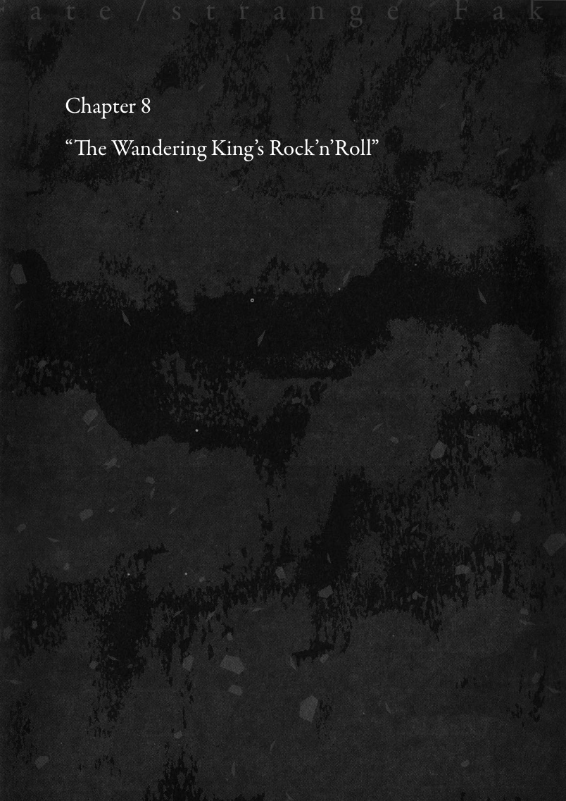
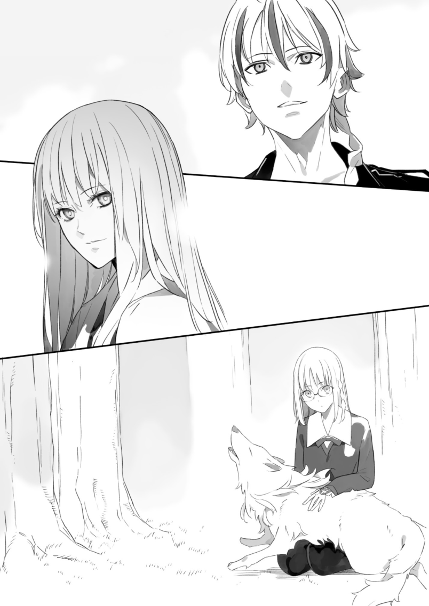

"O Rock'n'Roll do Rei Errante"
Capítulo 8: Dia 1, Tarde (2)
O Rock'n'Roll do Rei Errante
Na floresta.
O que eu estou fazendo? Ayaka Sajou se fez essa pergunta pela enésima vez em vinte e quatro horas. Quer dizer, o que é que eu estou fazendo? pensou, distraída, enquanto acariciava a barriga felpuda do belo animal aninhado ao seu lado.
Ah, é mesmo, a Guerra do Santo Graal. A fera prateada esfregou a cabeça nela, soltando um gemido. Ou pelo menos foi isso que me pareceu. A criatura era quente. Ayaka decidiu repassar o que havia feito na última metade do dia.
Meio dia antes. Snowfield central.
Ayaka andava depressa, tentando colocar o máximo de distância possível entre si e a delegacia. O sol mal havia nascido. Atrás dela, ouviu Saber soltar um suspiro de alívio.
"O que foi?" "Ah, nada demais. Só pedi a um amigo meu que desse uma olhada na delegacia, e me disseram que os prisioneiros foram evacuados temporariamente."
"E daí?" "Eu dei minha palavra aos policiais de que permaneceria sob custódia deles até o amanhecer. Estava pensando que deveria voltar, mas me preocupava deixá-la sozinha. Estava justamente pensando se devia deixar alguém com você. Mas, se a delegacia deixou de funcionar, então, bem, suponho que posso considerar minha obrigação cumprida. Afinal, eu permaneci detido ali até pouco antes de ela fechar", explicou Saber alegremente.
Desta vez foi a vez de Ayaka suspirar. "Você realmente pretendia cumprir essa promessa?" "Contratos são importantes. Quebrar um traz infortúnio não só para quem o quebra, mas também para aqueles que acabam envolvidos com ele."
"Eu realmente não entendo isso... E o que você quis dizer com 'deixar alguém comigo'? Você está sozinho."
"Não, não estou; estou com você."
Saber tentou se esquivar da pergunta com uma piada. Ayaka lançou-lhe um olhar cortante. "Ha ha. Fuzilar-me com os olhos não vai me fazer revelar minha mão aqui. Ah, mas, se você estiver mesmo curiosa, eu posso lhe dar uma dica..."
"Não precisa." Ayaka lançou a Saber um olhar ainda mais gelado e depois soltou outro grande suspiro. "Acho que é verdade que você estava preocupado comigo, mas... eu ainda acho que isso não é da sua conta, só que... obrigada."
O agradecimento de Ayaka foi sumindo no ar. Saber sorriu e balançou a cabeça. "Não precisa agradecer. Eu realmente estou me intrometendo onde não fui chamado. Se você me agradecer só por eu agir conforme meus caprichos, isso pode me incentivar a ser ainda mais intrometido. Já sei; se você estiver cansada de andar, por que eu não trago um cavalo? Tenho certeza de que William vai providenciar um, se eu gastar um pouco de energia mágica..."
"Não, estou bem, de verdade!" protestou Ayaka para o Espírito Heroico. Ela não fazia ideia do que ele poderia fazer se fosse deixado à própria sorte. Então vocalizou uma pergunta que já vinha martelando em sua cabeça havia algum tempo.
"Espera, quem é William? Se você não quer me contar nada, por que fica jogando nomes de pessoas que eu não conheço?"
Saber desviou o olhar por um instante e então respondeu com uma risada desarmante. "Ah, é só que você estava parecendo tão abatida e solitária. Achei que poderia animá-la se eu insinuasse que temos vários amigos invisíveis, então..."
"Isso é só assustador. Para com isso." "Entendido, vou parar. Não importa muito; em tempo, eu lhe falarei sobre 'todo mundo'." "Você realmente não precisa... Mas havia aquelas luzes, e elas podem ter ajudado em outras coisas sem que eu soubesse, então poderia agradecer a eles por mim...?"
Os olhos de Saber se arregalaram por um momento, e então ele sorriu. "Você tem uma expressão emburrada, Ayaka, mas vejo que é uma garota gentil." "Desculpa por parecer emburrada..." Uma voz inesperada interrompeu a conversa. "Ei, mocinha!" "Hã?" "Eu sabia; você é a garota de ontem. Parece que está vindo lá da delegacia. Tá tudo bem?"
Ayaka se virou, certa de que havia ouvido aquela voz em algum lugar muito recentemente, e viu um jovem com um penteado espalhafatoso demais para qualquer um que o visse algum dia esquecer. Era um cara vestido num punk berrante, com moicano, tatuagem no pescoço e piercings por todo o rosto e as orelhas — o
funcionário da farmácia a quem Ayaka havia pedido informações para chegar ao hotel quando entrou na cidade pela primeira vez.
"Você é aquele..." "Cara, que coincidência encontrar você aqui. Quem é ele? Seu namorado?" "Não, nada disso. Ele é... só alguém que eu conheço." Ayaka não podia explicar a um transeunte comum o que era um Servo. Quanto a Saber, ele encarou atentamente o homem do moicano e os outros jovens punks por perto antes de perguntar com inocência:
"Peço perdão por fazer uma pergunta tão indelicada, mas essas vestes teatrais foram costuradas por vocês mesmos ou são obra de algum artesão especializado? E se eu também perguntasse se foram vocês mesmos que fizeram esse penteado, tão cheio de espírito rebelde?"
Os olhos de Saber brilhavam. A banda trocou olhares. "De onde é o seu namorado?" perguntou o homem do moicano a Ayaka. "Eu já disse que ele não é meu namorado", começou Ayaka, repetindo a negação. "Inglaterra", respondeu Saber, ignorando-a. "Embora, mesmo contando Londres e Winchester, eu não tenha passado muito tempo lá."
"Huh. Eu achava que as coisas eram bem autênticas por lá." Os olhos de Saber recaíram sobre o estojo de guitarra pendurado no ombro do homem do moicano, e então se arregalaram como se ele tivesse ligado os pontos.
"Vocês seriam menestréis?" "Menestréis? Cara, que jeito estranho de falar." "Oh, minhas desculpas; o conhecimento que me foi concedido está longe de ser imparcial... Onde eu poderia ouvi-los tocar? Numa igreja? Numa taverna? Num teatro? Ah, mas eu acabei de destruí-lo...!"
Seria fácil tomar as palavras de Saber por zombaria. Aos ouvidos de Ayaka, porém, elas soavam estranhamente livres de malícia. Até então ele sempre agira com um certo distanciamento; agora havia uma inocência infantil em suas perguntas. Ao ver aquilo, Ayaka percebeu uma coisa.
Acho que... ele gosta mesmo de música. O homem do moicano e seus amigos pareciam ter recebido as perguntas de Saber do mesmo jeito que Ayaka — ela não conseguia dizer se aquilo era influência do carisma que ele possuía como Espírito Heroico — e o reconheceram como um excêntrico amante da música.
"Eu realmente não entendo você, mas nós tocando numa igreja? Ha! Essa foi boa. Me lembrou aquele filme da Whoopi Goldberg."
"Esse é o nome de alguma cantora famosa?" "Bom, mais ou menos isso", deu de ombros o homem do moicano. "A gente estava tocando num show que atravessou a noite, quando rolou alguma coisa tipo tiros ou explosões. A polícia soltou algum tipo de ordem de evacuação, então o nosso público foi mandado embora."
"...Que desastre", assentiu Ayaka. Lembrar-se do que tinha visto na luta entre o padre e o vampiro lhe trouxe um suor frio.
"Ei, vocês querem nos ouvir tocar? É de graça." "Ah, hum..." Ayaka, consciente de que deveriam estar se escondendo e constrangida com a ideia de aceitar qualquer coisa de graça, estava prestes a recusar, quando...
"Tem certeza? Muito obrigado! Vocês são ótimos sujeitos. Mesmo depois que eu voltar ao Trono, não esquecerei esta dívida!"
Quando viu Saber com um brilho ardente nos olhos, parecendo tão encantado quanto uma criança que acaba de conhecer uma estrela de cinema pela primeira vez, Ayaka teve certeza.
Sem dúvida nenhuma. Esse herói gosta mesmo de música.
Vários minutos depois. O homem do moicano e seus companheiros de banda estavam conduzindo Ayaka e Saber para uma boate subterrânea.
"A escada é bem íngreme, então cuidado onde pisa. Foi mal, mas este prédio é velho demais para ter elevador ou qualquer coisa chique assim", explicou o homem do moicano, em tom apologético. Aparentemente ele havia interpretado errado a intenção de Ayaka ao perguntar se o prédio tinha elevador. Ayaka sentiu um pouco de culpa por isso.
Ainda assim, pensou ela, esse Espírito Heroico parece ter vindo da Idade Média... Eu não entendo muito de punk, metal e essas coisas, mas não seria completamente diferente da música da época dele qualquer coisa que uma banda de rock tão espalhafatosa toque? Devia ser algo mais... clássico? Não, o Saber provavelmente está acostumado a ouvir coisas bem mais antigas que Mozart ou Beethoven.
O que eu faço se ele surtar quando ouvir rock...? Tem um monte de gente que se irrita com música voltada para os jovens, até nesta época...
Pessimista, mas sem ter para onde ir, Ayaka se deixou arrastar atrás de Saber e dos membros da banda. Decidiu que, se Saber gritasse "Isto não é música!" ou algo assim e fizesse uma cena, experimentaria o poder desses "Selos de Comando" e o arrastaria dali à força.
"Selos de Comando", é...? Já me explicaram como usar, mas será que eles realmente vão funcionar? Nós nem fizemos um contrato formal... e, para começo de conversa, meus Selos de Comando são falsos...
Selos de Comando falsos, criados apenas para usurpar os direitos de um Mestre. Aquelas cinco marcas haviam sido plantadas no corpo de Ayaka pela "mulher branca" imediatamente antes de sua chegada a Snowfield. A mulher branca dissera que eles possuíam o mesmo poder de comandar um Servo que Selos de Comando genuínos possuíam, mas Ayaka duvidava muito disso. Afinal, esta Guerra do Santo Graal
tinha acabado sendo muito diferente do que a mulher branca lhe contara.
"A Guerra do Santo Graal é uma batalha secreta até a morte travada onde ninguém pode ver", ela disse, e até isso não está certo...
E, mesmo que esses Selos de Comando fossem reais, será que eu conseguiria usá-los como um mago...? Oprimida pela ansiedade, ela desceu a escada preparada para encontrar um novo inferno à sua espera no fim dela.
Os medos de Ayaka se revelaram infundados. "Espetacular...!" Ayaka, Saber e o restante da equipe eram o único público daquele show solitário. No instante em que a apresentação terminou, porém, os aplausos trovejantes de Saber eram entusiasmados o bastante para equivaler aos de uma centena de fãs.
"Maravilhoso! Comovente! Preciso transformar este sentimento numa ode a Avalon — não, não precisa de ornamentos! Apenas 'maravilhoso' basta! Não é magnífico, Ayaka? Todos os menestréis desta era tocam com tamanha intensidade?"
"Hã? Ah, hum..." Ayaka se atrapalhou buscando uma resposta. "Como se chama a música que eles acabaram de tocar?" perguntou Saber em voz baixa, com os olhos brilhando, de modo que só Ayaka o ouvisse. "Não se parece com nada que eu tenha ouvido em minha época. A que gênero pertence? Não consigo pensar por que o Trono não me concedeu esse conhecimento; nada poderia ser mais importante! Afinal, é possível que realmente haja algo de errado com esta Guerra do Santo Graal."
"Tenho quase certeza de que a única coisa 'errada' aqui é você... Isto é, hum... punk? Ou talvez metal...?" "Ah, podem chamar do que quiser", interrompeu o guitarrista do moicano. Ele havia se aproximado quando terminou de tocar e ouvira Ayaka por acaso. Ver os dois cochichando pareceu despertar sua curiosidade.
"Tinha uma galera aqui um tempo atrás brigando para decidir se isso era metal ou punk, mas a gente só faz o que dá na telha. Rock and roll puro tá ótimo."
Ver Saber simplesmente curtindo a música deles sem ficar discutindo o nome do gênero pareceu deixá-lo um pouco constrangido.
"'Rock and roll'! Entendo!" Então Saber voltou os olhos para a guitarra elétrica nas mãos do homem do moicano. "Então este é um instrumento moderno! Quando o ouvi pela primeira vez, o som me pareceu peculiar, mas aquele rugido estrondoso se harmonizou maravilhosamente com a melodia! Parecia atravessar minhas entranhas para agarrar minha alma!"
O homem do moicano pareceu desconcertado ao ouvir Saber falar como se nunca tivesse visto uma guitarra elétrica
antes.
"...Cara, eu achei que você só estava falando de subgêneros. Esta foi mesmo a sua primeira vez ouvindo rock?"
"Ah, então 'rock and roll' se encurta para 'rock'. Sim, por mais vergonhoso que seja admitir, eu nunca o havia ouvido antes. Talvez já o tenha ouvido em outro tempo e lugar, mas, ao menos na minha forma atual, não tenho nenhuma memória disso. Nunca imaginei que teria uma chance de me impressionar tanto!"
"Eu realmente não entendo você, cara... Debaixo de que pedra da Inglaterra você andou vivendo?" "Tem certeza de que não escapou da Idade Média por uma fenda no tempo?" brincou a mulher que tocava baixo. Ayaka só conseguiu oferecer um sorriso enviesado.
O homem do moicano estendeu sua guitarra elétrica para Saber, que a observava com uma alegria infantil.
"Quer tentar?" "...Posso?"
Depois disso, começou a apresentação solo de Saber. Vê-lo começar a dominar a guitarra poucos instantes depois de tocá-la pela primeira vez confirmou em Ayaka a noção um tanto equivocada de que, por ter o necessário para se tornar um herói, ele era capaz de qualquer coisa. Ela precisou se policiar para não acabar cativada pelas notas que ele tocava.
Enquanto Ayaka não fazia nada num canto, os membros da banda — incluindo o homem do moicano, que havia trazido outra guitarra — começaram a harmonizar com o som de Saber. Antes que terminassem, já estavam até gravando a performance com uma câmera de vídeo.
A banda ficou tão encantada com Saber que, eventualmente, a conversa passou para o que deveriam comer no café da manhã. Não só isso, como aparentemente deram a ele algumas roupas sobressalentes apropriadas do camarim, porque em dado momento ele já havia tirado a armadura e agora poderia facilmente ser confundido com um membro mais reservado da banda.
O fato de que, somado às mechas vermelhas em seu cabelo, aquele visual lhe caía muito bem só irritou ainda mais Ayaka.
Eu me recusei a participar, então sei que não sou ninguém para falar... mas será que esse Espírito Heroico leva mesmo a sério essa luta pelo Graal...?
Quando os membros da banda anunciaram que iam se trocar e entraram numa sala vazia, Saber se aproximou de Ayaka, que estava sentada na beirada do palco.
"Você está bem, Ayaka? Não vai dormir?" "Estou completamente desperta. Difícil não estar, depois de toda essa guitarra elétrica." "Ha ha. Desculpe por isso."
Sorrindo alegremente, Saber sentou-se ao lado de Ayaka. "Aqui embaixo", informou em voz baixa, "não há Artefatos Místicos nem dispositivos de vigilância ligados ao exterior. Se você vai dormir, esta é a hora."
Ao ouvir isso, os olhos de Ayaka se arregalaram atrás dos óculos. Ela tinha certeza de que Saber havia se deixado levar pela música e se esquecido completamente de que estavam fugindo, quanto mais da Guerra do Santo Graal. Nunca imaginou que ele estivesse pensando tão à frente assim.
"Então, aquilo tudo foi atuação?" "O quê?" "Bem... o jeito como você agiu como se tivesse ficado maravilhado com a música, e..." "Nem pensar! Eu fiquei genuína e profundamente comovido! E você não ficou?" "Para ser sincero", continuou Saber, olhando ao redor para a área do público, "a minha ideia no começo era me esgueirar para algum lugar fora do alcance dos magos inimigos e me divertir um pouco ouvindo música moderna enquanto isso. Fui verdadeiramente afortunado por ter encontrado sons tão inusitados. Quero agradecer por você não ter me impedido."
"Bom, eu não tinha como, do jeito que o clima estava. Aquele cara do moicano é legal, apesar da aparência."
Ayaka suspirou. "Para ser sincera, eu nem me importei com a música. Embora você estivesse fazendo tanto barulho que eu precisei me afastar um pouco."
"Entendo. Desculpe por isso... Mas eles não eram incríveis? Colocaram a depressão e a raiva deles nas letras sem transformá-las em simples reclamações! Até agora eu só estava acostumado a ouvir canções de gesta do grande Rei Arthur e de seus Cavaleiros da Távola Redonda."
Saber soava nostálgico em relação ao passado, mas seus olhos ainda brilhavam. Este herói é o oposto de mim, pensou Ayaka, observando-o. Ele fala de todo tipo de coisa como se realmente gostasse delas, enquanto eu não consigo pensar de forma positiva sobre nada...
Ele provavelmente não vai conseguir o Graal porque está ligado a alguém como eu. "Ei." "O que foi? Se estiver com sono, eu posso perguntar se há alguma roupa de cama para você." "Não é isso... O que você quer desejar ao Graal?" "Ora, essa me surpreendeu." Saber soou um pouco assustado. "Nunca imaginei que você me perguntaria algo relacionado à Guerra do Santo Graal."
"Não é tão estranho assim. Só estava pensando que, se você tiver um motivo realmente importante... eu precisaria pedir desculpas. Quero dizer, não parece que eu vá ajudar em nada você a consegui-lo."
Saber pareceu espantado. "Você estava preocupada com isso? Você me fornece a energia mágica para eu continuar corpóreo.
Como poderia não ser útil?"
"Bom, desculpa. Sou covarde, mesmo que não pareça." Ayaka virou o rosto para longe de Saber. Ao ver isso, Saber pareceu preocupado por um instante antes de falar.
"Por que eu quero o Graal...? Eu mesmo gostaria de saber." "Como assim? Você respondeu ao chamado porque queria o Graal, não respondeu?"
"É assim que deveria ser, mas, mesmo agora que fui invocado, não tenho uma ideia clara do que o quero para fazer... O que os magos chamam de 'Trono' é um lugar especial. Até o tempo e as linhas do mundo ficam todos misturados ali, sem falar do espaço. É possível que eu encontre um motivo para desejar o Graal quando for invocado em outro tempo ou lugar, mas, pelo menos no momento, eu não tenho essas memórias."
"Eu realmente não entendo o que você quer dizer sobre tempo e memórias, mas... não existe alguma coisa? Ele pode realizar qualquer desejo, não pode?"
"Eu estaria mentindo se dissesse que não tenho arrependimentos sobre a maneira como vivi, mas isso não é algo para desejar ao Graal. Bem, se eu o conseguir, suponho que eu sempre posso me encarnar e me dedicar a estudar de verdade a música e o teatro desta era. Pode ser sem sentido, mas eu gostaria de levar o máximo possível de canções e histórias de bravura de volta para onde minha alma estava — o 'Trono' de que falei antes."
Ayaka não conseguia dizer se Saber estava brincando ou falando sério. Quando voltou a fitá-lo, encontrou em seus olhos uma expressão séria e pensativa. Ao ver isso, Ayaka soube ao menos que aquelas palavras não eram uma manobra para esconder suas verdadeiras intenções — Saber genuinamente não sabia por que havia sido invocado como um buscador do Santo Graal.
"Espíritos Heroicos devem ter todo tipo de motivo para desejar o Graal. Provavelmente há até alguns que planejam fazer algo com ele além de realizar um desejo... destruí-lo, por exemplo. Eu não me surpreenderia se o Assassin que estava lá quando fui invocado estivesse pensando em algo assim.
"Foi o Graal que o grande Rei Arthur buscou. Como tenho o Rei Arthur em alta estima, eu mesmo gostaria de obtê-lo", continuou Saber, relembrando o passado. "Quero apresentá-lo ao verdadeiro túmulo do Rei Arthur... mas não a ponto de esmagar as ambições de outros heróis, nem de colocar outras pessoas em perigo."
Quando Saber terminou de falar, houve uma breve pausa. Então, com um sorriso enviesado, ele assentiu para o ar vazio.
"Sim, você tem razão. Não sou um bom exemplo para falar disso. Afinal, eu deixei você me alvejar enquanto estava deslumbrado por tesouros ligados à Távola Redonda. Mas você também não pode dizer que eu aprendi a lição de forma admirável?"
"Você está falando com alguém que eu não consigo ver de novo..." Ayaka suspirou, imaginando de que adiantara a promessa que ele fizera antes.
No instante seguinte, seu suspiro virou um arquejo. "Eu vou lhe apresentar. O vínculo místico vai ficar um pouco mais forte..." Mal essas palavras saíram de sua boca quando ele tocou a tatuagem na mão direita de Ayaka. "Ei, o que você está—"
Justo então, uma "cena" vívida invadiu sua mente. "Ah..." Ela viu o que parecia ser a torre de vigia de um castelo europeu e, no centro dela, um homem enrolado da cabeça aos pés em ataduras, com uma besta na mão. Ele a fitava. Os olhos que apareciam entre as ataduras eram afiados como os de um falcão que avistou sua presa, mas também gentis.
O homem a olhou, desviou os olhos com certo constrangimento e então assentiu.
Assim que ele o fez, Ayaka tornou a ver a boate. "O que foi...?" Ayaka estava desnorteada pela cena irreal que lhe havia sido mostrada. "Pierre Basile. Um arqueiro magistral." "Quem?" Ele havia chamado aquilo de apresentação, mas o nome sozinho não significava nada para Ayaka. Ela estava prestes a pedir uma explicação melhor. Quando ouviu as palavras seguintes de Saber, porém, só conseguiu abrir e fechar os lábios em silêncio, como um peixinho dourado.
"O homem que me matou."
"...O quê?" "Eu posso usar dois Fantasmas Nobres — meus trunfos", começou Saber a explicar suas peculiaridades como Espírito Heroico a uma Ayaka atônita. "Um deles consiste em pegar as almas de vários companheiros que eu escolher — com o consentimento deles — transcrevê-las a partir do Trono e fazê-los me acompanhar.
"Eu não consigo manifestá-los e mantê-los materializados o tempo todo. Se quisesse torná-los corpóreos também, isso exigiria uma quantidade absurda de energia mágica. Tanta que qualquer mago comum se esgotaria em pouco tempo."
"Ah, hum..." "Por outro lado, eu posso usar a minha própria energia mágica como meio para fazer com que eles me auxiliem com suas habilidades e magias. Como a flecha que desviou o braço daquela mulher na ópera
ou as gotas brilhantes que usei na delegacia quando estava um breu. Além disso, eles podem conversar normalmente comigo, mas parece que não conseguem falar com você, Ayaka, a menos que façamos uma nova transferência de energia mágica, como acabamos de fazer agora."
"...Tá, espera." O rosto de Ayaka endureceu. Não era como se ela não tivesse entendido a explicação. Ela era ignorante em magia, mas a mulher branca havia martelado o mínimo indispensável em sua cabeça, então sabia o que aquelas palavras significavam. E foi justamente porque entendeu que Ayaka não conseguia aceitar o que Saber estava fazendo.
"Quanto ao meu outro Fantasma Nobre..." "Eu disse espera! Espera!" "O que foi?" Saber parou, assustado com a voz elevada de Ayaka. "No que você está pensando, me contando isso assim de repente?" continuou Ayaka, os dedos pressionados contra as têmporas. "Dizer o nome do cara que matou você é quase como dizer o seu Nome Verdadeiro!"
"Oh, você conhece Pierre?" "...Não. Desculpa, mas eu não sei quem é Pierre e, para ser sincera, também ainda não descobri quem é você. Mas, se algum mago que conhece melhor a própria história ouvisse isso, saberia na hora!"
"Talvez eu não seja assim tão conhecido..." murmurou Saber, inclinando a cabeça com ar intrigado. Ele fazia um contraste absoluto com a afobação de Ayaka.
"Bom, suponho que saberiam", assentiu ele, ficando sério. "Mas isso na verdade não é um problema; eu pretendo lhe dizer o meu Nome Verdadeiro."
"No que você está pensando!?" "Eu lhe disse lá na delegacia que lhe contaria quando a oportunidade aparecesse, não disse? Não há risco de magos nos ouvirem agora; me parece o momento perfeito. Seria difícil bloquear todos os olhos curiosos numa estalagem ou pelas ruas da cidade."
Na boate, por outro lado, ao menos não havia familiares nem dispositivos de escuta. O próprio Saber tinha dito isso. Nesse caso, agora, enquanto a banda estava nos camarins, provavelmente era mesmo a hora de falar. Mesmo assim, ainda havia um monte de problemas muito mais fundamentais.
"...Eu entendo o seu raciocínio, mas é melhor você parar." "Por quê?" perguntou Saber. Ele parecia curioso. "Você e eu estamos ligados apenas por energia mágica, certo?" rebateu Ayaka com firmeza. Ela estava tentando impedir Saber com mais seriedade do que nunca. "Nós nem sequer somos formalmente Mestre e Servo! Então é melhor guardar seu Nome Verdadeiro para quando você encontrar um Mestre melhor. Dizer isso para alguém como eu só vai trazer para você—"
"Nosso nome é Ricardo, Duque da Normandia e Rei da Inglaterra!"
O rosto de Saber se tornou subitamente grave. Ele interrompeu as objeções de Ayaka ao pronunciar com clareza o próprio Nome Verdadeiro.
"..." "Bem, acrescente um 'ex-' aos dois, agora que estou morto", deu de ombros Saber, exibindo outro sorriso travesso para Ayaka, que o encarava sem fala, de boca aberta.
"Meu epíteto, 'Coração de Leão', provavelmente é mais famoso do que meu Nome Verdadeiro ou meus títulos."
O presente. Na floresta.
Acabei me metendo com um rei dos infernos.
Mesmo depois de revelar seu Nome Verdadeiro, a atitude de Saber em relação a Ayaka permanecera inalterada. Quando o ouviu dizer pela primeira vez que era um rei, ela quase caiu para trás. Depois de vê-lo impressionado com o fast-food que a banda lhes comprara e ouvir como ele escutava música com atenção total na boate, porém, decidiu não dar atenção especial ao que ele tinha sido em vida.
"Jazz... clássico... blues... pop... tudo soberbo! Oh, pastorela, estampie, descort... até mesmo os poetas do sul deram nova amplitude às suas canções!"
A boate era equipada com uma enorme coleção de CDs do mundo inteiro — talvez hobby do dono — e Saber tinha novas palavras de sincero louvor para cada um que ouvia.
"Ayaka, esse 'enka' do seu país é maravilhosamente lírico, e essas 'músicas de anime' são cheias de narrativa e variedade! E o 'rap' desta terra sobrepõe palavra e som com tanta habilidade; é uma revelação!"
Quanto mais ela ouvia esse tipo de coisa de Saber, menos ele lhe parecia um rei que exigisse respeito. Pensando, porém, que talvez pudesse respeitá-lo como ser humano, Ayaka acabou ouvindo junto com ele uma variedade ainda maior de músicas.
"A música da Inglaterra também é fascinante em sua enorme diversidade, desde hinos e canções folclóricas nostálgicas até 'rock progressivo'! Isso me faz perceber outra vez que música é liberdade!"
Ele havia encerrado tudo assistindo em DVD ao filme da Whoopi Goldberg que o homem do moicano mencionara, dizendo:
"Entendo, então isto é um 'filme'! Uma bela coisa, embora tenha uma sensação diferente do teatro! Oh, este coral é soberbo!"
Ayaka havia sucumbido ao sono por volta de quando Saber começou a assistir aos musicais e acabou cochilando no sofá da boate. Quando percebeu, já era meio-dia.
Depois que agradeceram ao homem do moicano e aos outros da banda e saíram da boate, Saber de repente anunciou:
"Muito bem, vamos nos aliar a alguém."
Depois disso, eles entraram na floresta, onde ele alegava sentir com força especial a presença de um Espírito Heroico, e encontraram um Servo de cabelos longos belo o bastante para tirar o fôlego de Ayaka, embora ela não conseguisse dizer se era homem ou mulher. Saber começou a conversar com ele com uma familiaridade surpreendente para um primeiro encontro, mas o outro não pareceu se ofender.
"E então? O que você quer comigo?" perguntou o Espírito Heroico, voltando-se para ele. Saber olhou para Ayaka antes de responder. "Bem, eu não sei o seu Nome Verdadeiro, nem que tipo de Espírito Heroico você é... mas pensei em caminhar por aí e perguntar ao primeiro Servo que encontrasse."
Então Saber fez sua proposta. Até Ayaka, que já a tinha ouvido antes, achou aquilo absurdo demais.
"Você aceitaria formar uma aliança comigo?" Ele realmente falou isso assim, sem rodeios... As pessoas dos países que ele governou devem ter tido uma vida difícil.
Ayaka soltou um pequeno suspiro e escapou da realidade enquanto acariciava o dorso da fera prateada. De todo modo, esse cachorro é enorme, mas com certeza é amigável e fofo. Enquanto ela se ocupava brincando com o animal que tomou por um cão, o Espírito Heroico diante de Saber respondeu com um sorriso gentil.
"Eu não me importaria particularmente... mas, deixando a mim de lado, que benefício haveria para o meu Mestre?"

Ao ouvir isso, Saber lançou outro olhar para Ayaka e deu de ombros. "Se você se importa com o seu Mestre, não seria melhor evitar se aproximar de um inimigo sem pensar?"
"Eu poderia dizer o mesmo a você... Ou gostaria de dizer, mas parece que nenhum de nós precisa se preocupar com isso."
"Sim, tenho certeza de que ambos tomamos medidas defensivas... mas nossos tão importantes Mestres são, como se vê."
Sobre o que será que eles estão falando? Ayaka, sentada ao pé de uma grande árvore, se viu confusa com a conversa, mas acabou absorvida pela sensação da felpuda fera prateada repousando a cabeça em seu colo e deixou as dúvidas de lado por enquanto.
Cachorros grandes são mesmo tão quentinhos. Será que esse Espírito Heroico o cria como animal de estimação? A fera prateada também parecia nada insatisfeita. Ficou deitada de barriga sobre as coxas dela e lhe permitiu massagear seu pelo como bem entendesse.
Saber, observando a garota e a fera, suspirou. "Eu pensei que eles fossem mais ariscos com humanos." "A relação do meu Mestre com as pessoas é um pouco peculiar. Não é que ele goste de humanos, de forma alguma. Acho que sua Mestre é um caso especial; o meu parece vê-la como amiga ou aliada."
"Talvez porque as duas sejam Mestres incomuns. Bem, na verdade ela não é uma." Depois de terminar o que soava como piada, Saber disse: "Enfim, quanto ao motivo de eu ter proposto uma aliança... Ontem à noite, vi um monstro na cidade." "Um monstro?" "Não sei se você os conhece, mas são chamados de vampiros e se alimentam da força vital dos humanos. São inimigos naturais da humanidade e parceiros de sparring da Igreja Sagrada. Ah, primeiro: você sabe o que é a Igreja Sagrada?"
Saber começou pelo básico. O Espírito Heroico de cabelos longos balançou a cabeça. "Somente pelas informações que recebi do Graal. Ainda não havia uma Igreja Sagrada no meu tempo. Quanto a esses monstros sugadores de sangue... não sei. Havia monstros que se alimentavam de carne e sangue, mas não sei se eram os mesmos."
"Oh-ho. Então você seria meu venerável predecessor na história?" "Não há nada de impressionante nisso; só significa que eu nasci antes e morri antes. No que me diz respeito, são as pessoas nascidas depois que merecem respeito. Elas abrem caminho até as estrelas sem depender do mistério."
"Bajulação não vai levá-lo a lugar nenhum", riu Saber. Depois de uma breve pausa, porém, ele apagou o sorriso do rosto.
"Há algo estranho nesta Guerra do Santo Graal. Tenho a sensação de que algo está acontecendo que o conhecimento que recebi do Graal não explica por completo. Você tem alguma ideia?"
"..." "Só que eu estava pensando que, se a Guerra do Santo Graal foi enredada — ou está sendo usada — em alguma calamidade, deveríamos eliminar isso primeiro e então começar de novo."
Saber lançou um olhar para Ayaka enquanto falava e então abaixou a voz para que ela não ouvisse. "Do jeito que as coisas estão, eu não posso ter certeza da segurança de Ayaka, mesmo que ela busque refúgio com a Igreja depois da minha derrota. Um vampiro não teria escrúpulos em atacá-la ali."
"Vejo que sua Mestre significa muito para você." "Oh, eu não demonstraria tanta preocupação assim por ela se tivesse sido uma Mestre voluntária desde o começo. Ela se recusou a participar da Guerra do Santo Graal, mas acabou sendo arrastada para dentro dela por estar ligada a mim. Se eu a abandonasse sem assumir a responsabilidade por isso, macularia o nome das nações que dão continuidade à minha linhagem e dos grandes reis do passado."
O outro Espírito Heroico soltou uma risadinha ao ver Saber fazendo uma proclamação tão grandiosa em tom tão baixo e assentiu.
"Que curioso. Você deve ser um rei, mas não se parece em nada com o rei que eu conheço. Especialmente pelo jeito como parece fazer mais amigos do que a maioria."
"É mesmo? Eu diria que você tem mais amigos do que eu." "Eu considero amigo todo ser vivo deste mundo, embora esse sentimento muitas vezes não seja correspondido." Enquanto falava, o Espírito Heroico de cabelos longos fechou os olhos com delicadeza e abriu os braços, com as palmas para cima. Ao fazer isso, o chão pareceu borbulhar, e dessas bolhas brotaram inúmeras armas — espadas, martelos, machados, lanças — uma após a outra.
"Mas decidi que só existe um amigo ao qual revelarei o fundo do meu coração."
Saber saudou a visão com um sorriso largo. "Ei, as negociações estão se firmando ou desmoronando?" "Firmando-se, é claro... ou era o que eu gostaria de dizer, mas existem dois problemas", continuou o Espírito Heroico de cabelos longos, ainda sorrindo com gentileza. "Veja bem, esse meu melhor amigo é um tanto difícil de agradar. Sempre que tento fazer amizade ou firmar uma aliança com alguém, ele diz algo como 'Vou testá-lo para ver se é digno do meu amigo' e então afugenta a pessoa com exigências absurdas."
Ao relembrar o passado distante, seu sorriso ganhou um tom nostálgico. "No seu caso... acho que ele normalmente exigiria uma prova de força. Você não é um cidadão de Uruk...
então, se falhasse, acredito que ele o mataria na mesma hora. Do ponto de vista dele, afinal, você é um ladrão de olho em seu tesouro."
"Entendi aonde isso vai dar. A piada final é que esse 'amigo' também foi invocado nesta Guerra?"
"Fico contente por você ser tão perspicaz. Eu não consigo me obrigar a lhe dar esperança só para desapontá-lo depois. Gostaria de testá-lo para ver se é capaz de enfrentar aquele rei. Se isso me parecer impossível para você, eu exterminarei esse monstro sozinho; vocês devem apenas se esconder em algum lugar até lá."
A miríade de armas que surgia do chão se voltou para apontar suas pontas a Saber. Ainda assim, Saber sorriu — depois de se certificar de que nenhuma delas estava apontada para Ayaka e o lobo prateado, deitados um pouco mais afastados.
"Que gentileza. Se você consegue fazer isso sozinho, não seria melhor me matar aqui? Assim teria mais certeza de obter o Graal."
"Infelizmente, meu desejo já foi concedido. Tudo o que resta é cumprir minha promessa com meu amigo. Por isso, importa muito pouco para mim se você vive ou morre."
Seria impossível imaginar um sorriso mais gentil, e ele não vacilou nem por um instante, mas seu dono poderia muito bem ter dito: "Se me der vontade, eu tirarei a sua vida."
Saber sorriu de volta com alegria. "Eu adoro quando as coisas são simples. Só preciso mostrar minha perícia marcial, correto?"
"Ei, o que vocês dois estão—" começou Ayaka a chamar, vendo a situação, mas Saber ergueu casualmente uma mão para impedi-la sem sequer se virar.
"Fique tranquila, Ayaka. É só um teste de força preparatório para formar uma aliança. Duvido que qualquer pessoa normal quisesse se aliar a um fracote."
"...Você está dizendo que não é normal, então?" Saber recebeu as palavras do Espírito Heroico de cabelos longos com um sorriso enviesado. Então ergueu a voz para se dirigir tanto a Ayaka quanto ao Espírito Heroico à sua frente.
"Parece mesmo que eu não sou tão 'normal' quanto pensava. Na verdade, como rei, eu sempre causava problemas tanto ao meu povo quanto ao meu irmão mais novo. Acabei sendo chamado de rei perverso e injusto pelos meus inimigos também; o absoluto oposto do meu distinto rival."
As palavras de Saber soavam como autoflagelação, mas o brilho selvagem jamais abandonou seus olhos. "Mesmo quando compreendia a lógica do governo, eu nunca conseguia conter meus impulsos viscerais."
Ao ouvir essas palavras, Ayaka tomou consciência de uma sensação de desconforto no próprio corpo. Meus Selos de Comando estão... quentes? Um enorme volume de energia mágica e nítidos "tremores" atravessavam os
Selos de Comando singulares de Ayaka, a fonte de sua ligação com Saber. Era como se, em troca da energia que ela lhe fornecia, o calor incontível de Saber fluísse para dentro dela.
"...Mais impressionante do que eu esperava. Você deve ser um Espírito Heroico extraordinário. Todas essas armas brotando do chão... e cada uma delas representa o pináculo do artesanato humano. Tê-las todas apontadas para mim..." Saber interrompeu-se com uma pequena risada. Depois outra, e mais outra, até que, no instante seguinte, liberou o fogo que guardava numa gargalhada selvagem.
"Soberbo! Você deve ser um grande herói! Não poderia haver honra maior! Nós lhe rendemos nossos sinceros agradecimentos, a você, ao Santo Graal... e a Avalon, o paraíso longínquo do ancestral dos reis da nossa nação, por me concederem a oportunidade de desafiar uma lenda que caminhou sobre a terra na Era dos Deuses!"
Em algum lugar escuro.
"Ainda não consigo entender." Francesca estava deitada na cama, beliscando alguma coisa. "Entender o quê?" veio a voz de seu Servo da escuridão. "Ah, por que aquele Saber esquisito apareceu no lugar da Artie, mesmo eu tendo usado aquele catalisador." "E que catalisador foi esse?" "Ah, bem, a bainha da espada lendária dela sumiu... então eu usei a caixa em que ela estava selada. Tinha o mesmo padrão da bainha."
"Uma caixa?" Francesca rolou sobre a cama e inclinou a cabeça, intrigada, diante da pergunta do Espírito Heroico invisível.
"É; uma caixa de pedra lindamente polida que os Einzbern aparentemente encontraram na Cornualha. Havia vestígios de energia mágica nela, e tinha o mesmo padrão da bainha, então eu imaginei que também devia ser da Artie."
A grande floresta.
Como se respondesse à súbita animação de Saber, o Espírito Heroico de cabelos longos sorriu e começou a despejar poderosa energia mágica no chão e nos inúmeros "Fantasmas Nobres" cravados nele.
Ayaka arquejou. Espera aí! A polícia confiscou a espada dele... e ela ainda está na delegacia, então... ele está de mãos vazias! E nem está usando a armadura!
Saber havia removido a armadura, que era composta de energia mágica. Ainda usava as roupas que tinha ganhado na boate. Ayaka não sabia o quanto uma armadura ajudaria contra aquelas armas de aparência brutal, mas ao menos tinha certeza de que, em roupas comuns, ele seria empalado num instante.
Ignorando as tentativas desesperadas de Ayaka de detê-lo, o Espírito Heroico de cabelos longos disparou de uma vez todas as armas que emergiam do solo.
Ao mesmo tempo, Saber impulsionou-se com força no chão e se lançou contra o enxame de lâminas. Enquanto avançava, ainda exultante, pronunciou uma única frase cheia de júbilo:
"Agora... vamos começar."
A delegacia.
"Então, Caster? Aprendeu alguma coisa com a espada que lhe enviei?" A resposta que o chefe de polícia recebeu do Espírito Heroico do outro lado da linha soou exasperada.
"Que se dane tudo isso. Essa coisa não é um Fantasma Nobre; é só uma espada de enfeite. Gostei do design, no entanto. Posso ficar com ela?"
O chefe havia enviado a Dumas a espada ornamental que Saber deixara na delegacia. Ele jamais esperara que Saber abandonasse sua arma e priorizasse a fuga. Tanto que, quando voltou ao escritório e viu a espada ainda sobre a mesa, suspeitou que fosse algum tipo de armadilha.
"Tecnicamente, isso é uma prova. Não posso simplesmente entregá-la." "Como sempre, você é duro que nem um ovo cozido demais!" "Mais importante: ele aparentemente disparou rajadas parecidas com relâmpagos daquela espada, destruindo os escombros que caíam da ópera. Os policiais que presenciaram a cena já passaram por manipulação de memória, mas um deles chegou a descrever aquilo como algo parecido com um 'canhão de energia'."
O chefe suspeitava que o poder daquela espada também tivesse sido responsável por destruir o teto da ópera em primeiro lugar. Pelo que conseguira julgar, não passava de uma espada ornamentada. Ainda assim, pensara que a análise de Caster talvez revelasse
alguma coisa. Chegara até a esperar que, se tudo desse certo, pudesse usá-la para obter algum acordo com Saber. Mas, se não era um Fantasma Nobre, essa estratégia provavelmente era irrealista.
"Um cavaleiro loiro com um pouco de vermelho no cabelo? Aposto que é o Coração de Leão." "...Então você chegou à mesma conclusão, Caster." "É. E, falando no Coração de Leão, o sujeito era um fanático pelo Rei Arthur. Cresceu ouvindo lendas sobre Arthur e os Cavaleiros da Távola Redonda como histórias de ninar. Os menestréis de sua corte viviam cantando o quanto Arthur era grandioso também. Quando era mais novo, ele tinha um quê de filho pródigo, e alguns até dizem que viveu vagando por toda parte em busca de relíquias do Rei Arthur."
"Também ouvi isso." O chefe considerava isso apenas mais uma das anedotas com que as gerações posteriores inevitavelmente adornam a vida de qualquer herói e não lhe dava grande importância. A resposta de Caster, porém, foi quase grave.
"A cultura dos menestréis surgiu de técnicas para transmitir às gerações futuras as tradições orais dos mistérios druídicos... ou pelo menos é o que diz uma teoria. De qualquer jeito, é melhor você não subestimar os cantos e a poesia contemporâneos. Se você fizer alguém ouvir alguma coisa aqui todas as noites como história de ninar, é bem possível que isso altere a alma dessa pessoa como uma maldição... ou uma bênção."
"...Ricardo Coração de Leão não é um herói de uma era de mistério relativamente fraco?" "No continente, tenho certeza de que era. Mas, embora ele viesse da França moderna, foi da Inglaterra que ele foi rei, e a Inglaterra é uma nação insular. É difícil o mistério vazar quando você está cercado por água. Não seria nada estranho se ele tivesse tocado em parte disso enquanto ainda estava vivo e ativo. A 'Torre do Relógio', um dos grandes quartéis-generais dos magos, fica lá agora mesmo. Isso já deve lhe dar uma ideia."
Nesse ponto, Caster fez uma pausa e depois continuou sua explicação ao chefe em tom solene. "Diga, mano, você sabe como chamavam o Coração de Leão na minha época? Embora, pelo que eu sei, talvez ainda chamem."
"Há anedotas demais sobre ele; não sei a qual você se refere." O chefe suspeitou que fosse só mais uma das habituais tagarelices inúteis, mas a fala de Caster ocasionalmente continha informações valiosas. Não esperava grande coisa, mas decidiu aguardar o Servo falar.
"Chamavam-no de... 'O Rei Errante'." "Ah, era disso que você estava falando. De fato, já ouvi dizer que, durante seus dez anos no trono, ele passou menos de um ano no próprio país, mas—"
"Não é isso; não estou falando do fato de ele estar sempre indo para um campo de batalha ou voltando de um."
Caster soava como se desse certa importância ao que tinha a dizer.
"Não entendo", perguntou o chefe, desconfiado. "Então por onde Ricardo Coração de Leão vagou?"
"Pela fronteira entre a história... e o mito." "..." Havia poder naquelas palavras simples. O bastante para fazer o chefe ficar em silêncio apesar de si mesmo.
"Isso significa que ele foi o último rei com um pé numa era em que fadas e runas ainda estavam expostas ao mundo. Não é algo para se levar na brincadeira."
Na floresta.
Existe uma expressão: "rápido como um relâmpago". Em geral ela é usada de forma metafórica, mas a cena que se gravou nos olhos de Ayaka naquele instante foi tão intensa que realmente a fez pensar em clarões de relâmpago.
Inúmeras armas, nascidas da Terra, se lançaram ao ar. Abrindo caminho por entre todas elas, Saber se aproximou do Espírito Heroico de cabelos longos e desferiu um gancho de direita afiado.
Seu oponente recuou rapidamente, desviando, mas Saber avançou para acompanhá-lo e lançou um uppercut de esquerda oblíquo.
Mais uma vez o Espírito Heroico se esquivou, mas o punho de Saber passou por uma mecha de seu cabelo esvoaçante, e vários fios caíram ao chão, nitidamente seccionados. A força do golpe havia transformado o punho de Saber numa lâmina afiada o bastante para cortar cabelos balançando ao vento.
Saber manteve a ofensiva, desviando dos tentáculos de terra que o oponente lhe arremessava e, às vezes, usando até mesmo as armas nas pontas deles como apoios. Tudo isso enquanto desferia uma saraivada de golpes digna de um boxeador profissional.
O Espírito Heroico de cabelos longos também era impressionante à sua maneira. Continuou repelindo com precisão perfeita os punhos violentos que se fechavam sobre ele.
Saber tinha uma ligeira vantagem em velocidade pura, mas seu oponente parecia superá-lo em força física imediata e amortecia a velocidade de Saber a ponto de desviar seus golpes. O resultado era um combate equilibrado.
Outra rajada de armas de terra voou em direção a Saber, obrigando-o a recuar e reiniciar a investida.
"Você é rápido. Estou surpreso; não achei que fosse mais rápido do que eu. Isso foi magia de reforço?"
O Espírito Heroico de cabelos longos balançou a cabeça, divertido. "Bem, ela não é minha", respondeu Saber, com os olhos ainda em chamas. "Mais importante... parece que eu realmente não consigo atravessar sua defesa só com os punhos."
"Então essa magia é obra do seu 'amigo'... Você estudou boxe também?" "Um pouco. Tentei combinar técnicas que vi num filme hoje mais cedo com o combate que aprendi, mas eu sabia que não seria tão fácil. Como não posso sair matando alguém com quem estou tentando formar uma aliança, achei que podia derrubá-lo com um soco, mas..."
"Mover-se como você acabou de se mover depois de tão pouco treino e observação já é impressionante por si só", riu o Servo de cabelos longos, e sua presença mudou sutilmente.
Saber percebeu que o jeito do oponente, ou talvez seu equilíbrio geral, havia se alterado quase imperceptivelmente.
"Vou enfrentá-lo um pouco mais a sério, como membro da classe Lancer", dirigiu-se a ele o Espírito Heroico.
"Saber. Prazer em conhecê-lo." Assim que anunciaram suas classes, ambos sorriram largamente e partiram para a ação.
Mais uma vez, a visão daquele embate se gravou nos olhos de Ayaka como faíscas dançando. Ela se lembrou do que Saber dissera quando a mulher vestida de negro saltara pela ópera rápido o bastante para deixar pós-imagens por onde passava:
"Nunca vi ninguém mais leve nos pés do que Locksley!" Ayaka não entendia muito de leveza de pés, mas, quando se tratava de pura velocidade instantânea, suspeitava que ele superasse a mulher de negro.
Saber, por sua vez, tinha suas próprias dúvidas enquanto desferia rajadas de socos. Que truque é esse? Este Espírito Heroico está ainda mais rápido do que antes...! Ele não tinha como saber, mas, quando a aura de Lancer mudou momentos antes, ele havia usado sua habilidade de Transfiguração para reduzir sua resistência e seu poder mágico em um rank cada e aumentar sua agilidade.
Agora os dois estavam empatados em velocidade, mas, como Lancer não havia reduzido sua força, seus golpes hábeis foram aos poucos empurrando para trás os ataques velozes de Saber.
No instante seguinte, a mão direita de Saber, em vez de um soco, lançou uma gota d'água impregnada de energia mágica, liberando um clarão e criando distância entre ele e o oponente. Essa distância, porém, ele usou não para lançar outro ataque contra Lancer, mas para se afastar ainda mais.
Vasculhando o chão com os olhos, ele se abaixou — desviando dos tentáculos de terra e das armas voadoras o tempo todo — e com uma das mãos ergueu um galho grosso caído ao lado dele. Então, apontando-o para Lancer, sorriu.
"Parece que esse meu boxe improvisado realmente não vai bastar. A partir de agora vou usar uma espada, como convém à minha classe."
"Esse galho vai substituir uma espada, então?" Lancer soou profundamente interessado. "Eu sempre quis experimentar isso", deu de ombros Saber. "Sabe, bancar o Cavaleiro do Lago, dizer 'um cavaleiro não morre de mãos vazias' e derrotar meus inimigos com um galho apanhado do chão."
Ayaka estava de pé ao lado do lobo prateado, prendendo a respiração enquanto assistia aos dois Espíritos Heroicos lutarem. Quando viu Saber brandir com confiança aquele galho, porém, ficou mais do que um pouco inquieta.
Eu realmente não entendo, mas ele não pode ter comprado briga de propósito com as mãos vazias só porque queria brincar de seja lá o que for isso... pode?
Uma gota de suor frio desceu pela bochecha de Ayaka. Como se fosse um sinal para isso, outra imensa saraivada de armas foi lançada da terra, com as pontas todas apontadas para Saber, que empunhava o galho. As lâminas eram tão numerosas que não parecia possível que ele pudesse se esquivar de todas, mesmo na velocidade em que vinha se movendo até então.
Para Ayaka, a situação parecia desesperadora. No instante seguinte, porém, o grito que estava prestes a escapar de sua garganta foi interceptado por um choque ainda maior:
O que deveria ser um galho comum começou a emitir uma luz deslumbrante.
A delegacia.
"Ah, é, de acordo com os documentos que vocês juntaram, a Excalibur do Rei Arthur arrasa tudo com um grande corte de luz... Em termos modernos, eu diria que isso é um 'canhão de energia'."
"Sim. Foi exatamente por isso que presumi que aquele Espírito Heroico fosse o Rei Arthur, e que aquela espada fosse Excalibur, mas..."
O chefe refletiu sobre o comentário de Dumas. Dizia-se que Excalibur não era um Fantasma Nobre humano forjado por ferreiros e magos na era do mistério, mas um Construto Divino criado pela própria vontade do planeta. Se isso fosse verdade, aquele realmente poderia ser o limite de seu poder?
Nesse momento, a voz divertida de Dumas soou pelo telefone. "Cara! Talvez você esteja surpreendentemente perto, mano." "O que quer dizer?" "Veja bem, o velho Coração de Leão levou essa mania pelo Arthur longe demais. Não importava se estivesse no campo de batalha ou cuidando da vida comum... Aparentemente, ele dava o nome de 'Excalibur' a toda espada que possuía. No fim, não eram só espadas; qualquer coisa que ele pudesse segurar na mão e usar para lutar virava 'Excalibur'.
"Até a faca que usava para cortar a comida, ou um pergaminho enrolado... ou um graveto encontrado no chão."
Na floresta.
"Ex...calibur!"
Aquela devia ser a terceira vez que Ayaka via aquela luz. O corte brilhante que derrubara o teto da ópera e atravessara os escombros que caíam diante dos policiais.
Desta vez o rastro de luz era menor do que havia sido então, mas o calor comprimido apagou num instante a miríade de armas que voava em direção a Saber.
Ele se impulsionou no chão com a mesma velocidade de antes e, um momento depois, já estava dentro da guarda de Lancer. Balançou o galho, ainda coberto por vestígios de luz, para abater o Lancer surpreso.
Aquele golpe, porém, foi interceptado por Lancer, que supostamente estava de mãos vazias. "Nossa... isso aí parece útil para quebrar nozes." Saber soou impressionado. Ele observava a mão direita com a qual Lancer havia bloqueado o galho. Lancer havia transformado os dedos em lâminas afiadas e interrompido o corte de Saber com habilidade, enterrando-os pela metade no galho através de sua espessa camada de energia mágica.
"Tudo isso de poder com um galho de árvore... Estou chocado." "Então? Eu passei no teste?" perguntou Saber sem diminuir a força que estava colocando no galho. "Pelo que vejo, você não está usando nem metade da sua verdadeira força."
Saber não sabia quem era Lancer, mas aqueles poucos minutos já haviam sido suficientes para convencê-lo de que Lancer era excepcional até mesmo entre Espíritos Heroicos, ele próprio incluído.
"Você é forte. Não sei o que meu amigo vai dizer, mas acho que vamos conseguir se você fugir enquanto eu o seguro, caso chegue a esse ponto."
"...Esse 'amigo' é ainda mais forte do que você?" "Talvez. Nos velhos tempos, lutamos por três dias e três noites sem conseguir decidir nada." Aos poucos, os dois foram relaxando enquanto conversavam. Por fim, Saber abaixou o galho. Assim que a energia mágica enrolada nele se dissipou, a madeira se desfez em pó.
"Oh, eu sabia", suspirou Saber. "Com madeira, uma vez é o limite." Então começou a caminhar até Ayaka. "Ei... você está bem?" Percebendo que o "teste de força" devia ter acabado, uma Ayaka aflita correu até ele para se certificar de que não estava ferido.
"Não me assuste desse jeito! No que você estava pensando...? Aquilo não foi um 'teste de força'; foi uma luta de vida ou morte!"
"Oh... bem, alguns testes de força realmente exigem que você arrisque a vida. Eu conheci um cavaleiro que partiu para a Escócia dizendo que ia testar a própria força na Terra das Sombras, mas no caminho foi cercado por oito mil bandidos e morto."
"Não tenta sair dessa com histórias inventadas!" "Você percebeu? Claro... Nenhum cavaleiro foi morto por bandidos, e povo nenhum jamais foi atormentado por um bando de oito mil deles... ainda bem...!"
Vendo Saber lutar para empurrar a conversa para outro rumo, Lancer se dirigiu a Ayaka com um sorriso refrescante.
"Perdoe-o. Ele simplesmente não consegue obrigar-se a lhe contar os riscos que vem correndo por sua causa."
"O quê...?" As palavras de Lancer fizeram Ayaka congelar. "Já disseram alguma vez que você não sabe ler o ambiente?" "Os deuses me diziam isso o tempo todo. Como quando matei o touro deles; levei uma bronca terrível naquela vez."
"Você matou um touro? Ah, eu adoraria ouvir mais sobre isso!" Saber ainda estava tentando empurrar a conversa para outro assunto. Ayaka agarrou a trança na nuca dele e puxou com toda a força do corpo.
"Ai! Ei, Ayaka, para com isso! Dói! Entendi; desculpa!" Quando Saber se virou, com lágrimas nos olhos, encontrou Ayaka zangada, mas com os olhos igualmente cheios d'água.
"Por que... você faria uma coisa dessas?" "O que quer dizer com 'por quê'?" "Eu sei. Não sei os detalhes, mas eu sei que você vem tentando fazer alguma coisa por mim... Só que eu não pedi isso!"
"Eu não lhe disse? Vou ajudá-la, queira você ou não", deu de ombros Saber. "Se você precisava de energia, podia simplesmente ter usado magia ou qualquer outra coisa para me enganar e me transformar numa boneca para tirar isso de mim!" retrucou Ayaka. "Mas você se preocupou comigo... e me salvou... confiou seu Nome Verdadeiro a mim... Ah, está tudo errado. Eu sou grata a você. Sou mesmo."
Saber estava a ponto de dizer que não havia feito nada que exigisse gratidão, mas decidiu ficar calado e deixar Ayaka falar.
"Mas... eu não valho isso! Eu não valho a pena ser protegida nem receber sua confiança!"
No fundo da mente de Ayaka, enquanto ela gritava, estava uma garotinha de capuz vermelho. Toda vez que se lembrava da garota ensanguentada, uma voz ressoava dentro dela. Uma voz gritando o quão vil e covarde ela era.
"Mesmo que você tenha sido tão gentil comigo, eu tenho certeza de que vou traí-lo! Provavelmente vou abandoná-lo ou vendê-lo por conveniência própria!"
Sim, é isso mesmo. Eu a traí. Eu a abandonei. Lá atrás, nos Apartamentos Semina, eu... Ao recordar o passado, Ayaka sentiu a cabeça doer e o coração acelerar. Saber soltou um pequeno suspiro. "Você talvez me venda aos meus inimigos...? Você realmente se preocupa com coisas tão pequenas, Ayaka." "'Pequenas'...?" "Minúsculas. Isso acontece o tempo todo. Até meu irmão mais novo, meu próprio sangue, certa vez me vendeu para Roma. E ele não apenas me abandonou; de fato pagou aos meus inimigos para não me soltarem."
Saber falava dos próprios parentes não como se estivesse tentando consolar Ayaka ou simpatizar com ela, mas como se a história realmente nada significasse para ele.
"Seu próprio irmão fez...?" Ayaka ficou chocada ao ouvir algo tão deprimente. "Bom, foi difícil, mas, quando voltei para casa, descobri que meu irmão tinha ido tão longe a ponto de me declarar morto para usurpar o trono, e ainda assim fracassou completamente. A nobreza e o povo todos deram as costas para ele. No fim, eu até acabei sentindo pena do pobre coitado. Quero dizer, meus gastos irresponsáveis é que deram início a toda a confusão..."
"M-mas isso não tem nada a ver comigo, e—"
Ayaka começou a falar, certa de que Saber estava tentando mudar de assunto outra vez, mas ele a interrompeu de imediato.
"Tem tudo a ver com você! Pelo jeito que vivi, não é surpresa quando alguém me trai, ou me vende, ou foge de mim. Duvido que eu precise me preocupar com isso, mas você não me tomou por uma boa pessoa, tomou?"
"Eu não me importo com isso. Quero dizer, qualquer coisa que você tenha feito—" "Guerra." Saber pronunciou a palavra com um leve orgulho, mas também com uma tristeza indefinível. "Veja, essa era a única coisa que eu sabia fazer." Raramente em Saber, ele parecia hesitar em dizer mais. Ayaka ficou sem palavras. Estava prestes a afundar ainda mais na própria aversão a si mesma, quando um ganido curto veio de seus pés.
A fera prateada esfregou a bochecha nas canelas de Ayaka. Quase parecia estar tentando consolá-la.
Nesse ponto, Lancer, que permanecera em silêncio até então, colocou a mão no dorso da fera prateada e disse:
"Vamos, não fica bem que as pessoas com quem estou firmando uma aliança pareçam tão abatidas. Gostariam de comer alguma coisa? Posso preparar nozes e frutas, se quiserem."
"Sim, obrigada. Eu aceito." Lancer colocou uma fruta silvestre na mão estendida de Saber e então se virou para as árvores a uma curta distância, perguntando de novo.
"Você também quer um pouco? Está nos observando há algum tempo; deve estar com fome." "...Hã?" "O quê?" Ayaka e Saber se viraram, arregalando os olhos, bem a tempo de ver uma figura solitária emergir das árvores. Era o Espírito Heroico vestido de preto que estivera presente quando Ayaka e Saber se encontraram pela primeira vez.
"Ah!" "Estou surpreso. Nem mesmo eu a percebi", disse Saber, tensionando cada nervo do corpo para lutar a qualquer instante.
A provável Assassin fitou-os com desconforto através da abertura do pano que lhe cobria o rosto. Então, sem aviso, falou.
"Você é Ricardo? O Coração de Leão?" "Sou, sim." "Ei..." Ayaka correu para impedi-lo, mas Saber balançou a cabeça. "Agora que ela já ouviu tanto assim, esconder só dará mais trabalho do que vale."
A indiferença de Saber levou Ayaka a soltar um suspiro maior do que o habitual. Ainda encarando os dois, Assassin prosseguiu. "Eu ouvi... o que você disse." Enquanto falava, a garota Assassin cerrava os punhos com tanta força que eles sangravam. O gesto parecia falar do esforço que aquelas palavras lhe custavam.
"Você vai... matar o monstro?" "Se ele fizer mal aos humanos", respondeu Saber com seriedade. "Quando eu estava vivo, uma criatura do tipo dele não apenas interrompeu uma batalha entre mim e meu distinto rival, como também matou vários dos meus seguidores..."
Saber fez uma pausa. Soava ao mesmo tempo nostálgico e arrependido em relação ao passado. Pareceu se resolver antes de continuar.
"Embora, naquela ocasião, meu rival — com quem eu tinha um encontro marcado no campo de batalha — e eu... junto com o seu chefe, o 'Velho da Montanha', de algum modo tenhamos conseguido destruir a criatura juntos."
"...Já ouvi essa história. Quão... aterrorizante você deve ter sido naquela época." Assassin parecia pronta para atacar a qualquer momento. Saber também permaneceu em guarda. A situação parecia crítica.
Lancer, porém, falhou em ler o ambiente. "Esse, aliás, é o segundo problema que eu mencionei quando você propôs uma aliança." "...Eu tinha me esquecido disso." "Na verdade, existem alguns 'monstros' que eu mesmo gostaria de remover desta cidade. Para poder cumprir meu compromisso com meu amigo, entende."
"...Tenho a sensação de que os 'monstros' de que você está falando talvez sejam mais perigosos do que qualquer sanguessuga."
"Oh, não. No momento, eles são apenas uma 'maldição' negra... e uma massa de 'lama' castanho-avermelhada." O habitual sorriso de Lancer desapareceu de seu rosto, substituído por uma expressão de angústia, enquanto ele falava das presenças que havia sentido no último dia.
"Mas, se elas se fundirem e penetrarem no Graal...
"Não só o Graal, mas este mundo inteiro pode entrar em sérios apuros."